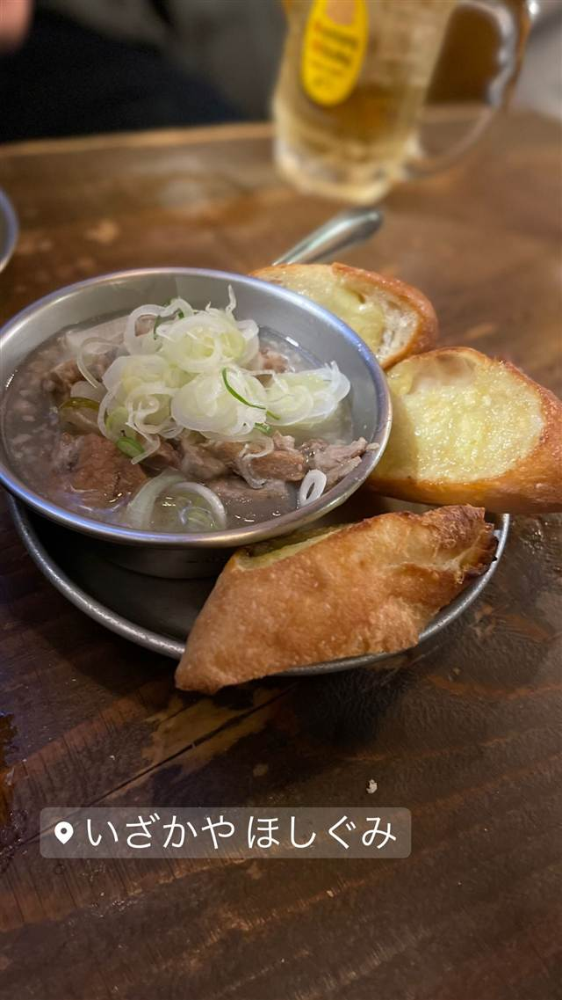

いざかや ほしぐみ
駅徒歩1分圏内に3店舗、ワインが呑める赤提灯酒場
いざかやほしぐみ
2009年、三軒茶屋の「三角地帯」に「ワインが呑める赤提灯」をコンセプトに開業した居酒屋。代表の柳生久輝氏はその後フライドキッチンや新館も展開し、駅徒歩1分圏内に3店舗を構える超ドミナント経営で人気を集めている。
TRIVIA
豆知識
- シンボルマークは星印。
- 姉妹店を含め駅前わずか3分圏内に3店舗を構える“超ドミナント経営”で知られる。
REVIEWS
世間の評判
3.40食べログ
名物の塩もつ煮込みとトースト
- 名物の塩もつ煮込みと柚子胡椒トーストの美味しさを評価する声が多い
- 一人当たり3000円台で楽しめるコスパの良さを評価する声がある
- 星をモチーフにした内装や隠れ家のような雰囲気を評価する声が多い
- 入口が分かりにくく席数も少ないため大人数には向かないという声がある
食べログ 口コミ181件
| 創業 | 2009年6月開業 |
|---|---|
| 系譜 | 三軒茶屋「三角地帯」で複数店舗を展開する「ほしぐみ」ブランドの1号店（本店）。 |
| 看板 | 居酒屋定番料理とワインに合う創作料理。ワインを常時約30種類用意。 |
| こだわり | 「ワインが呑める赤提灯」をコンセプトに、昭和レトロな雰囲気の中で居酒屋料理とワインを組み合わせる。 |
| どこから | 23区の外れ・近郊 |
| 営業時間 | 月〜金 17:30-23:30 土 16:30-23:30 日 16:30-23:00 |
| 予算 | 夜 ¥4,000～¥4,999 |
| 定休日 | 不定休 |
| 予約 | 予約可 |
| 場所 | 三軒茶屋駅 東京都世田谷区三軒茶屋2丁目13-10 |
| メモ | 本店は姉妹店「ほしぐみフライドキッチン」と同じ住所（三軒茶屋2-13-10）に立地。全店舗が駅徒歩1分圏内・出店間隔3分弱という超ドミナント経営で知られ、ブランド全体で月商1100万円規模ともいわれる。 |
食べたもの：居酒屋料理
NEARBY
近い店・同じ系統の店
-
 ★
醤油・中華そば 三軒茶屋駅
めん和正（わしょう）
看板のない行列店、永福町大勝軒系の煮干し中華そば
昼 ～¥999 夜 ～¥999
★
醤油・中華そば 三軒茶屋駅
めん和正（わしょう）
看板のない行列店、永福町大勝軒系の煮干し中華そば
昼 ～¥999 夜 ～¥999
-
 ★
醤油・中華そば 三軒茶屋
らーめん・わんたん ゆう輝屋
たんたん亭に連なる系譜の透き通った醤油ワンタン麺
昼 ¥1,000～¥1,999 夜 ¥1,000～¥1,999
★
醤油・中華そば 三軒茶屋
らーめん・わんたん ゆう輝屋
たんたん亭に連なる系譜の透き通った醤油ワンタン麺
昼 ¥1,000～¥1,999 夜 ¥1,000～¥1,999
-
 パスタ 三軒茶屋駅
トラットリア ピッツェリア ラルテ（Trattoria e Pizzeria L'ARTE）
ビブグルマン掲載、ピザ百名店4度選出のVPN認定ナポリピッツァ
昼 ¥3,000～¥3,999 夜 ¥8,000～¥9,999
パスタ 三軒茶屋駅
トラットリア ピッツェリア ラルテ（Trattoria e Pizzeria L'ARTE）
ビブグルマン掲載、ピザ百名店4度選出のVPN認定ナポリピッツァ
昼 ¥3,000～¥3,999 夜 ¥8,000～¥9,999
-
 天ぷら・天丼 三軒茶屋
てんぷら横丁 わばる 三軒茶屋店
薄衣でサクサクの江戸前串天ぷらを塩やソースで味変
昼 ～¥999 夜 ¥2,000～¥2,999
天ぷら・天丼 三軒茶屋
てんぷら横丁 わばる 三軒茶屋店
薄衣でサクサクの江戸前串天ぷらを塩やソースで味変
昼 ～¥999 夜 ¥2,000～¥2,999
-
 お好み焼き・もんじゃ 三軒茶屋
緒駕多（おがた）
自由が丘で5年修行した店主の、京都仕込みの出汁とソース
昼 ¥1,000～¥1,999 夜 ¥2,000～¥2,999
お好み焼き・もんじゃ 三軒茶屋
緒駕多（おがた）
自由が丘で5年修行した店主の、京都仕込みの出汁とソース
昼 ¥1,000～¥1,999 夜 ¥2,000～¥2,999
-
 喫茶店 三軒茶屋
MOON FACTORY COFFEE
京都の名店の姉妹店で味わう北海道美幌豆のハンドドリップ
昼 ¥1,000～¥1,999 夜 ¥1,000～¥1,999
喫茶店 三軒茶屋
MOON FACTORY COFFEE
京都の名店の姉妹店で味わう北海道美幌豆のハンドドリップ
昼 ¥1,000～¥1,999 夜 ¥1,000～¥1,999